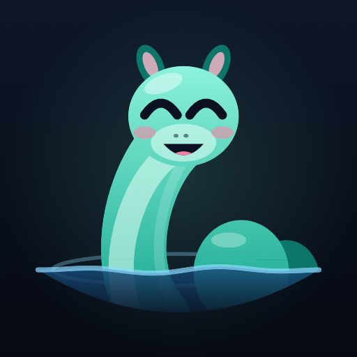

An app blocker that gives you a moment to choose.
Block distracting apps, reduce screen time, and pause before you doomscroll. Loch puts a short wait between the urge to open an app and the moment you get in.
How Loch helps you stay focused
- Choose the apps you want to block. Put social media, games, or other distractions behind Loch's wall.
- Pause before opening one. A blocked app brings you back to Loch. Decide whether you still want to use it.
- Wait for a short unlock. Choose 5, 10, or 20 minutes. Longer access takes a longer wait.
- Return to the wall. When the unlock expires, the app is blocked again. Other apps stay on their own clocks.
The wait is the point
You didn't decide to open it. Your thumb did. Loch gives you time to notice the habit and change your mind. You can back out before unlocking, whether you are studying, working, or trying to spend less time scrolling.
Leaving Loch during the countdown resets the wait. Ads can play during the wait; the countdown continues behind them, but a longer ad may finish after it. Any tip permanently removes ads.
App blocking on Android and iPhone
Loch for Android uses an accessibility service you enable in Settings. It reads the foreground app's package name to show the wall over apps you selected. It does not read screen contents or keystrokes.
On iPhone and iPad, Loch uses Apple's Screen Time permission and app picker. Your choices arrive as private tokens, so Loch is not told the names of the apps you block.
Your block list stays on your device
No account or sign-in is needed. Loch has no backend of its own, and your block list and unlock history stay on your phone. Google AdMob processes advertising data to serve ads. Read the Android privacy policy or iPhone and iPad privacy policy for details.
Questions about Loch
Is Loch a screen time limiter?
Loch limits access to selected apps with short timed unlocks. It does not set a daily screen time quota. Its focus is the moment you reach for a distracting app.
Can I turn the app blocker off?
Yes. Loch is for limits you choose for yourself. Disabling its blocking permission or uninstalling it removes the wall. It is not a parental control or an unbreakable lock.
Does Loch require a subscription?
No subscription is required. Loch is free with ads during the unlock wait. Optional tips remove ads permanently.
Where can I get help?
Visit Loch support for setup, permissions, unlocks, and purchase help.